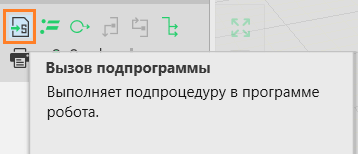
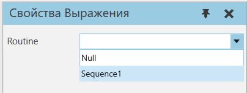

Вызов подпрограмм в программе робота |
|
Чтобы подпрограмма была выполнена, она должна быть вызвана либо основной подпрограммой, либо другой подпрограммой, которая выполняется в программе робота. 1.Нажмите на вкладку Программа, а затем выберите в трехмерном мире робота, которого вы хотите запрограммировать. 2.На панели Редактор программы, выберите подпрограмму, которую вы хотите использовать для вызова другой подпрограммы. 3.На панели инструментов Операторы, нажмите Вызов подпрограммы.  4.На панели Свойства, выберите Routine к подпрограмме, которую вы хотите вызвать этим оператором.  |